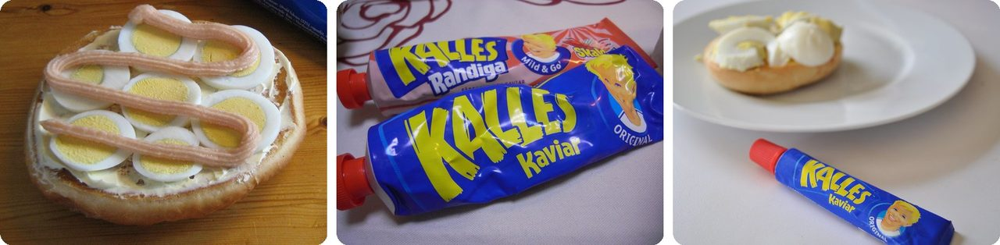

🌍 Top 10 Les petits-déjeuners d'hôtel les plus bizarres
26 novembre 2026
1. 🇺🇸 Les œufs Bénédicte ont peut-être commencé comme une commande de lendemain de fête
 En 1942, un courtier de Wall Street à la retraite, Lemuel Benedict, a raconté au magazine The New Yorker la naissance d'un petit-déjeuner célèbre. En 1894, disait-il, il était entré à l'hôtel Waldorf de New York en espérant soigner sa gueule de bois du matin.
En 1942, un courtier de Wall Street à la retraite, Lemuel Benedict, a raconté au magazine The New Yorker la naissance d'un petit-déjeuner célèbre. En 1894, disait-il, il était entré à l'hôtel Waldorf de New York en espérant soigner sa gueule de bois du matin.
Il a commandé des toasts beurrés, des œufs pochés, du bacon croustillant et de la sauce hollandaise à part, une sauce riche faite d'œufs, de citron et de beurre fondu. Le maître d'hôtel, Oscar Tschirky, a tellement aimé l'idée qu'il l'a mise aux menus du petit-déjeuner et du déjeuner. Il a juste remplacé le bacon par du jambon et le toast par un muffin anglais.
Ce n'est pas la seule histoire. Le restaurant Delmonico's dit avoir fait ce plat en premier, dès 1860.
En gros, un grand classique du petit-déjeuner américain a peut-être commencé comme remède pour se sentir moins mal.
2. 🏴 Un hôtel de Londres a inventé une omelette au poisson pour un romancier
 L'écrivain Arnold Bennett mangeait si souvent au Savoy Grill, dans l'hôtel Savoy de Londres, que le chef, Jean Baptiste Virlogeux, a créé une omelette rien que pour lui.
L'écrivain Arnold Bennett mangeait si souvent au Savoy Grill, dans l'hôtel Savoy de Londres, que le chef, Jean Baptiste Virlogeux, a créé une omelette rien que pour lui.
Ce n'est pas une omelette ordinaire. Elle est garnie de haddock fumé, un poisson au goût de fumée, avec du cheddar et de la crème. C'est toujours un classique britannique, et une version est encore à la carte du Savoy Grill.
Bennett aimait tellement l'hôtel qu'il a étudié son fonctionnement et a écrit en 1930 tout un roman sur un hôtel qui lui ressemble, Imperial Palace.
Imagine un fan qui finit par avoir un plat à son nom.
3. 🇮🇱 Les hôtels israéliens ont essayé d'annuler leur petit-déjeuner géant, sans succès
 Le petit-déjeuner israélien est né dans les kibboutz, des fermes où les gens vivaient et travaillaient ensemble. Les travailleurs mangeaient un petit en-cas tôt le matin, partaient aux champs quelques heures, puis revenaient pour un énorme buffet dans la salle à manger commune.
Le petit-déjeuner israélien est né dans les kibboutz, des fermes où les gens vivaient et travaillaient ensemble. Les travailleurs mangeaient un petit en-cas tôt le matin, partaient aux champs quelques heures, puis revenaient pour un énorme buffet dans la salle à manger commune.
Dès les années 1950, les hôtels le copiaient : salades, fromages, œufs, poissons comme le hareng, pains et viennoiseries. Il n'y a presque jamais de viande, parce que les règles alimentaires juives disent qu'on ne mange pas de viande et de produits laitiers au même repas.
En 1979, des propriétaires d'hôtels ont décidé de le remplacer par un petit-déjeuner plus simple pour faire des économies. Une des raisons données : les touristes prenaient trop de nourriture pour la garder pour les repas suivants. Le plan n'a pas marché, et le grand buffet est revenu.
Autrement dit, le petit-déjeuner était si bon que les clients en gardaient pour plus tard.
4. 🛎️ Le petit-déjeuner continental a été inventé par les hôtels, pas par l'Europe
 « Continental » veut dire l'Europe continentale, mais ce petit-déjeuner a été créé par l'hôtellerie des pays anglophones. Le nom est apparu pour la première fois en Amérique en 1896, dans un livre new-yorkais sur la santé publique.
« Continental » veut dire l'Europe continentale, mais ce petit-déjeuner a été créé par l'hôtellerie des pays anglophones. Le nom est apparu pour la première fois en Amérique en 1896, dans un livre new-yorkais sur la santé publique.
Les aliments n'ont pas été choisis pour leur goût. Ils ont été choisis parce qu'ils se conservent bien sans frigo et sont faciles à servir à de grands groupes : pain, muffins, viennoiseries, fruits, céréales, et petites portions de beurre et de confiture.
C'est aussi pour ça que les hôtels bon marché l'adorent. Il demande moins de personnel qu'un petit-déjeuner chaud.
En gros, c'est un petit-déjeuner conçu pour tenir toute la matinée sur la table.
5. 🥞 Certains hôtels laissent les clients faire marcher leur machine à pancakes
 La première machine à pancakes connue a été inventée à Portland, dans l'Oregon, en 1928. De l'air poussait la pâte sur une plaque chaude qui tournait, une petite planchette retournait chaque pancake à mi-cuisson, et une petite porte faisait sortir le pancake terminé.
La première machine à pancakes connue a été inventée à Portland, dans l'Oregon, en 1928. De l'air poussait la pâte sur une plaque chaude qui tournait, une petite planchette retournait chaque pancake à mi-cuisson, et une petite porte faisait sortir le pancake terminé.
Aujourd'hui, certains hôtels ont des machines à pancakes que les clients ont le droit de faire marcher eux-mêmes, et on en trouve aussi dans des salons chics d'aéroport.
Certains ont même fabriqué la leur. En 1977, un club d'Ocala, en Floride, en a construit une qu'il fallait faire tourner à quatre personnes, et elle cuisait de 750 à 1 000 pancakes par heure, plus de 12 par minute.
Un cuisinier robot dans la salle du petit-déjeuner.
6. 🇯🇵 Le natto filant du Japon a peut-être commencé comme nourriture pour chevaux
 Le natto, ce sont des graines de soja fermentées par une bonne bactérie. On le mange souvent au petit-déjeuner avec du riz. Au Japon, les auberges traditionnelles appelées ryokan servent un petit-déjeuner traditionnel complet, et les hôtels à l'occidentale proposent en général un mélange de plats japonais et occidentaux.
Le natto, ce sont des graines de soja fermentées par une bonne bactérie. On le mange souvent au petit-déjeuner avec du riz. Au Japon, les auberges traditionnelles appelées ryokan servent un petit-déjeuner traditionnel complet, et les hôtels à l'occidentale proposent en général un mélange de plats japonais et occidentaux.
Le natto sent un peu le vieux fromage fort. Quand tu le mélanges, il fait plein de fils collants, comme du fromage fondu qui ne veut pas lâcher.
Une légende raconte qu'il est né avec les soldats d'un samouraï. Ils faisaient bouillir du soja pour leurs chevaux quand ils ont été attaqués, alors ils ont fourré les graines dans des sacs de paille. Quelques jours plus tard, le soja avait fermenté, et les soldats l'ont mangé quand même et l'ont trouvé bon.
Imagine un accident devenu petit-déjeuner.
7. 🇨🇳 Les œufs de cent ans n'ont pas 100 ans, ils sont juste complètement changés
 Les œufs de cent ans, pídàn (皮蛋) en chinois, sont des œufs de cane, de poule ou de caille enrobés d'un mélange d'argile, de cendre, de sel, de chaux et de balles de riz. Ils restent comme ça de quelques semaines à quelques mois, pas un siècle.
Les œufs de cent ans, pídàn (皮蛋) en chinois, sont des œufs de cane, de poule ou de caille enrobés d'un mélange d'argile, de cendre, de sel, de chaux et de balles de riz. Ils restent comme ça de quelques semaines à quelques mois, pas un siècle.
Le mélange transforme lentement l'œuf. Le jaune devient gris-vert foncé et crémeux, et le blanc devient une gelée brune transparente. Les meilleurs ont des dessins comme des branches de pin sur le blanc.
En Thaïlande et au Laos, leur nom veut dire « œuf à l'urine de cheval », mais ils ne sont pas faits avec du pipi de cheval. C'est juste une idée fausse, peut-être à cause de leur odeur forte. Certaines familles chinoises les coupent en morceaux et les cuisent dans un congee aux œufs de cent ans et au porc maigre, une bouillie de riz appelée pídàn shòuròu zhōu (皮蛋瘦肉粥).
Autrement dit, c'est un œuf qui s'est complètement relooké dans un bain de boue.
8. 🇸🇪 Les Suédois pressent des œufs de poisson d'un tube au petit-déjeuner

Un petit-déjeuner suédois typique, c'est une tartine, et une garniture préférée est le smörgåskaviar, une pâte à tartiner faite d'œufs de poisson. Une marque classique est Kalles, faite d'œufs de cabillaud (œufs de poisson) fumés, sucrés et salés.Elle est vendue dans un tube en métal, comme du dentifrice. C'est fait exprès : les tubes en plastique aspirent de l'air quand on les presse, et l'air abîme la pâte. Un tube en métal reste simplement écrasé.
Le garçon sur le tube depuis 1954 est le fils du patron, Carl, surnommé Kalle. En 2011, IKEA a remplacé Kalles par sa propre marque, les gens se sont fâchés, et en quelques années il est revenu dans les rayons.
C'est du dentifrice pour ta tartine.
9. 🇳🇱 Les Néerlandais mettent de la « grêle » au chocolat sur leur pain
 Hagelslag veut dire « averse de grêle ». Ce sont de petits vermicelles en chocolat que les Néerlandais saupoudrent sur du pain beurré au petit-déjeuner ou au déjeuner. En Belgique, on les appelle pour rire muizenstrontjes, « crottes de souris ».
Hagelslag veut dire « averse de grêle ». Ce sont de petits vermicelles en chocolat que les Néerlandais saupoudrent sur du pain beurré au petit-déjeuner ou au déjeuner. En Belgique, on les appelle pour rire muizenstrontjes, « crottes de souris ».
Les Pays-Bas mangent environ 750 000 tartines de hagelslag par jour. Sur un an, ça fait plus de 14 millions de kilos de vermicelles, plus lourd que 2 000 éléphants.
Le plus gros fabricant, Venz, fait du hagelslag au chocolat depuis 1936. Il y en a au chocolat noir, au lait et blanc, et même aux fruits.
Alors aux Pays-Bas, manger des vermicelles au petit-déjeuner, c'est tout à fait normal.
10. 🇬🇧 Des gens lancent du boudin noir dans un concours
 Le black pudding est une sorte de boudin noir fait de sang de porc, de gras et d'avoine ou d'orge. Il fait partie du petit-déjeuner anglais complet, avec le bacon, les saucisses, les œufs, les haricots et les toasts.
Le black pudding est une sorte de boudin noir fait de sang de porc, de gras et d'avoine ou d'orge. Il fait partie du petit-déjeuner anglais complet, avec le bacon, les saucisses, les œufs, les haricots et les toasts.
Tout le monde ne l'aime pas. Dans un sondage de 2017 sur le petit-déjeuner anglais complet idéal, c'était l'ingrédient traditionnel le moins populaire, choisi seulement 35 % du temps.
Mais certains l'adorent. À Ramsbottom, près de Manchester, les championnats du monde de lancer de black pudding ont lieu chaque année depuis les années 1980. Les gens lancent des black puddings sur des piles de Yorkshire puddings, une blague sur la vieille rivalité entre le Lancashire et le Yorkshire.
Alors c'est un petit-déjeuner qui peut aussi servir de balle.
Le saviez-vous ?
Arnold Bennett n'est pas le seul célèbre à avoir eu un plat au Savoy. En 1893, le chef de l'hôtel, Auguste Escoffier, a inventé la pêche Melba, un dessert nommé en l'honneur de la chanteuse australienne Nellie Melba. Bennett, Melba et le compositeur Rossini ont tous l'honneur d'avoir un plat célèbre à leur nom. Les plats qui portent le nom de vraies personnes, des sandwichs aux pizzas, pourraient être un thème délicieux à explorer la prochaine fois.
Crédits photo (Wikimedia Commons)
- #1: Traditional Eggs Benedict.jpg by Mark Miller, CC BY-SA 4.0
- #1: Dancing at the Waldorf Astoria.jpg by Henry James Soulen, Public domain
- #1: Classic Eggs Benedict (flickr) by thebittenword.com, CC BY 2.0
- #2: Entrance to the Savoy Hotel, London - geograph.org.uk - 2281522.jpg by Anthony O'Neil, CC BY-SA 2.0
- #2: Omelette 1.jpg by Gaurav Dhwaj Khadka, CC BY-SA 4.0
- #2: Savoy Hotel Foyer - geograph.org.uk - 4519342.jpg by Anthony O'Neil, CC BY-SA 2.0
- #3: Israeli breakfast (flickr) by TeamRakbo, Public domain
- #3: Liat Portal for Foodie Disorder - Israeli breakfast in Tel Aviv.jpg by HaJunkiyada, CC BY-SA 4.0
- #3: Israeli breakfast (flickr) by Londo Mollari, CC BY-SA 2.0
- #4: Continental Breakfast.jpg by William J Sisti, CC BY-SA 2.0
- #4: Continental Breakfast (5618024251).jpg by Matt @ PEK from Taipei, Taiwan, CC BY-SA 2.0
- #4: Elizabeth Okie Paxton, Continental Breakfast.jpg by Elizabeth Okie Paxton, Public domain
- #5: Breakfast Pancake machine in Hotel. NICE. (flickr) by GoodNCrazy, CC BY 2.0
- #5: Pancake Machine (flickr) by reivax, CC BY-SA 2.0
- #5: Pancake machine (flickr) by WordRidden, CC BY 2.0
- #6: Natto mixed by Kinchan1.jpg by Kinchan1, CC BY 2.0
- #6: Rice seasoned with Natto.jpg by Qbwr8296, CC BY-SA 4.0
- #6: Natto (flickr) by snowpea&bokchoi, CC BY 2.0
- #7: Century egg porridge with pork by gigijin at Salvo Hotel Shanghai.jpg by gigijin from Salvo Hotel Shanghai, CC BY-SA 2.0
- #7: Century eggs with pickle ginger.jpg by Takeaway, CC BY-SA 3.0
- #7: A century eggs and Pork Congee from Chi Kee Congee Shop.jpg by Peachyeung316, CC BY-SA 4.0
- #8: Kalles Kaviar (cropped).jpg by Petey21, Public domain
- #8: KALLES kaviar (flickr) by kobakou, CC BY 2.0
- #8: Kalles Kaviar and eggs (flickr) by lovelihood, CC BY-SA 2.0
- #9: Hagelslag, a childrens favourite (flickr) by Ronald van der Graaf, CC BY 2.0
- #9: Hagelslag.jpg by No machine-readable author provided. DennisM assumed (based on copyright claims)., Public domain
- #9: Hagelslag chocolate sprinkles.jpg by Amin, CC BY-SA 4.0
- #10: Black Pudding - Classic English Breakfast - Jones the Grocer, Chadstone AUD13 (flickr) by avlxyz, CC BY-SA 2.0
- #10: Stornoway Black Pudding.jpg by Alexbrn, CC BY-SA 3.0
- #10: Irish black and white pudding slices.JPG by O'Dea, CC BY-SA 4.0


.jpg){kind=link}


.jpg){kind=link}